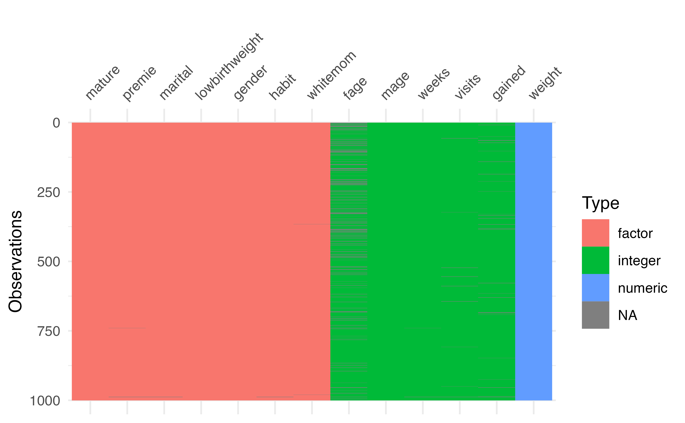
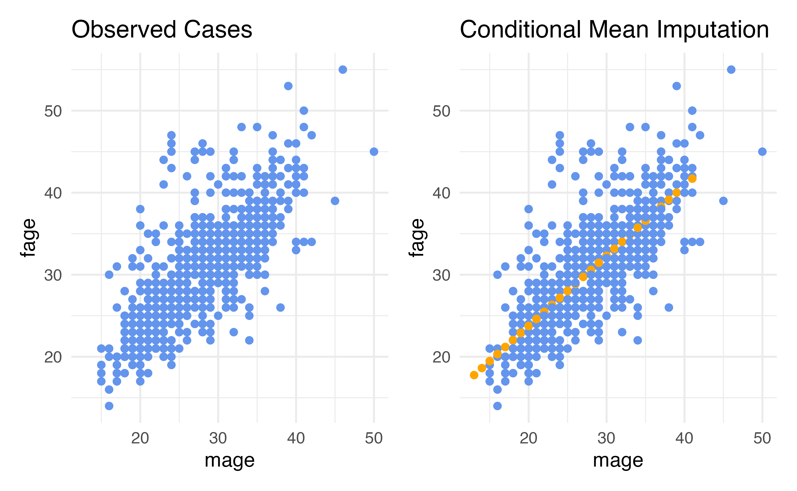
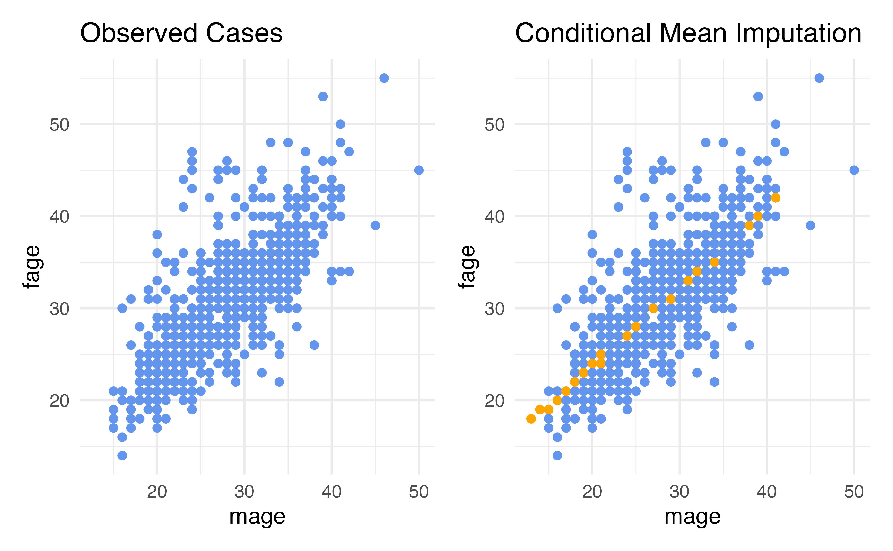
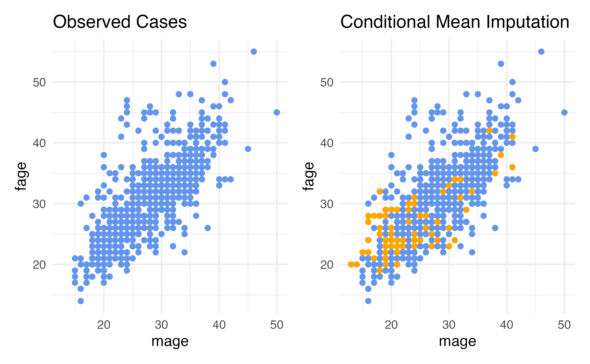

Missing Data
The Data
fage: father’s age in years.mage: mother’s age in years.mature: maturity status of mother.weeks: length of pregnancy in weeks.premie: whether the birth was classified as premature (premie) or full-term.visits: number of hospital visits during pregnancy.marital: whether mother is married or not married at time of birth.gained: weight gained by mother during pregnancy in lbs.weight: weight of the baby at birth in pounds.lowbirthweight: whether baby was classified as low birthweight (low) or not (not low).gender: biological sex of the baby, limited to f or m.habit: status of the mother as a nonsmoker or a smoker.whitemom: whether mom identifies as white or not white.
Missing data exploratory analysis
- The
visdatpackage is a great way to visualize key information about your dataset - Use the function
vis_dat()on your dataframe to see the column types and explore missingness- This is especially useful for large datasets
- Use the
vis_miss()function to learn more about the missing data
vis_dat()
Which column has the most missing data?
vis_miss()
What do we do?
There are three typical approaches:
- Complete Case Analysis
- Available Case Analysis
- Imputation
Complete Case Analysis
Complete Case Analysis
- This is probably what you have done most often
- This means we eliminate all rows in the dataset that contain any missing data
- The only rows we use are the complete rows, with no missing data
Complete Case Analysis
Advantage: It is easy!
- The first step is to create a dataset that only includes rows that are fully observed
NOTE It is important that you hold on to the original data somewhere when doing complete case analysis, we may need to go back and look at the rows we dropped.
Complete case analysis
When doing complete cases analysis, it is important to always note how many observations are dropped.
- Here we are dropping 200 rows, losing 20% of the data
Disadvantages of Complete Case Analysis
What issues might there be with simply deleting 20% of your sample?
- We reduce our sample size
- We could lose the representative nature of our data
- What if the data is missing for a reason?
- What if a particular group of people refused to answer a question, so by conducting a complete case analysis we completely remove that group of people from the data set?
What assumptions are we making?
- When doing a complete case analysis, we assume the data is missing completely at random
- This means that when we remove all the rows with missing data, our sample is still representative of the population – a very strong assumption!
Available Case Analysis
- Suppose there are 30 variables, but we only need to use 25 in our analysis
- Available case analysis means we ignore any missing data in the 5 variables we don’t plan to use and eliminate all rows with missing data in our desired 25 variables
Available Case Analysis
Advantages: Same as complete case analysis (fast and easy!)
Disadvantages: Same as complete case analysis (the variables we are including must be missing completely at random)
Available Case Analysis
Alternative
Okay, but what about when neither complete case analysis or available case analysis is appropriate?
In these situations, we are going to consider imputation
Imputation is the process of estimating the missing values to create a completed version of the data set.
Imputation
Imputation
To impute all the missing values in this data set, we are going to
- Estimate values for all the missing values in the original data set
- Fill in the missing data with these estimates. This is called completing the data
- End up with a data set that has the same dimensions as the original
ncdata set, but with no missing data. - Proceed with our modeling.
Getting started
There are a lot of techniques we can use for imputation.
The hardest step in this process is deciding which technique might be appropriate
We are going to explore a few commonly used techniques, and discuss the pros and cons of each
fage: Father’s Age
- Let’s look at one variable with a lot of missing data:
fage - There are 171 rows that are missing this variable
- For example, here is row 1:
fage: Father’s Age
- Let’s look at one variable with a lot of missing data:
fage - There are 171 rows that are missing this variable
- For example, here is row 1:
# A tibble: 1 × 13
fage mage mature weeks premie visits marital gained weight lowbi…¹ gender
<int> <int> <fct> <int> <fct> <int> <fct> <int> <dbl> <fct> <fct>
1 NA 13 younger … 39 full … 10 married 38 7.63 not low male
# … with 2 more variables: habit <fct>, whitemom <fct>, and abbreviated
# variable name ¹lowbirthweight- We need to decide how to impute (estimate the missing values) for father’s age
Technique 1: Unconditional Mean Imputation
- One of the simplest techniques for imputing such values is called unconditional mean imputation, or UMI.
- This imputation technique involves filling in missing values by looking at all rows that have observed information for the variable of interest, and computing the mean of that variable.
- We then impute all rows that are missing the variable by plugging in the mean.
- The idea behind this technique is that if we don’t know what a missing data value should be, it may be reasonable to just plug in the average value.
Technique 1: Unconditional Mean Imputation
For our variable of interest, fage, we can conduct unconditional mean imputation (UMI) by
- taking all of the data point for which fage is observed
- computing the mean and
- replacing all missing fage values with this mean.
- This will yield a data set that is completed, i.e., has no missing data, in
fage
Technique 1: Unconditional Mean Imputation
Technique 1: Unconditional Mean Imputation
Behind the scenes (in practice you don’t need the code below, just showing what the recipe is doing)
# A tibble: 1 × 1
mean_fage
<dbl>
1 30.3nc_mean_impute <- nc |>
mutate(
imputed = is.na(fage),
fage = case_when(
imputed ~ 30.25573,
TRUE ~ as.numeric(fage)
))
nc_mean_impute %>%
slice(1)# A tibble: 1 × 14
fage mage mature weeks premie visits marital gained weight lowbi…¹ gender
<dbl> <int> <fct> <int> <fct> <int> <fct> <int> <dbl> <fct> <fct>
1 30.3 13 younger … 39 full … 10 married 38 7.63 not low male
# … with 3 more variables: habit <fct>, whitemom <fct>, imputed <lgl>, and
# abbreviated variable name ¹lowbirthweightChecking our imputations
Once we have completed an imputation process, our next step is ALWAYS to check
- To make sure we actually filled in all the missing values and
- To check to see how these imputations compare to the observed data.
- Did we impute something completely ridiculous, or something that looks reasonable?
Checking our imputations
Checking our impuations
- Why didn’t the mean change?
- How was the standard deviation different?
Considerations: Unconditional Mean Imputation
- Our imputed values were all at the mean
- This means that we put additional rows exactly 0 standard deviations from the mean
- Standard deviation describes how much we’d expect an average data point to vary from the mean
- Our mean-imputed data set will have a smaller standard deviation than the observed data (more rows are actually exactly at the mean – we did that! so teh average distance from the mean is smaller)
- Therefore, unconditional mean imputation generally underestiamtes the variability in the data
Considerations: Unconditional Mean Imputation
Disadvantages: Unconditional Mean Imputation
- Our imputations do not reflect the relationship in the data that exists between
fageandmage - This is because we did not include this relationship as part of our imputation strategy!
- UMI considers only the marginal distribution of the variable being imputed.
- It completely ignores the fact that values of
fagemight be related to another variable present in the data set. - As a result, using unconditional mean imputation often results in a distortion of conditional distributions in the data
Considerations for Unconditional Mean Imputation
Pros: It is fast and easy to compute, you can use all observed data
Cons:
- It underestimates the variability in the data
- It often distorts conditional distributions in the data
- It relies on the data being missing completely at random
Conditional Mean Imputation
Conditional Mean Imputation
- Rather than computing the marginal mean and putting that in for our missing values, we could calculate a conditional mean, a mean that conditions on our other variables
- How do we calculate conditional means?
- Linear regression is the simplest way!
Conditional Mean Imputation
Conditional Mean Imputation
Behind the scenes (in practice you don’t need the code below, just showing what the recipe is doing)
nc_cmean_impute <- fit(linear_reg(),
fage ~ mage,
data = nc) |>
predict(new_data = nc) |>
bind_cols(nc) |>
mutate(
imputed = is.na(fage),
fage = case_when(
imputed ~ .pred,
TRUE ~ as.numeric(fage)
))
nc_cmean_impute# A tibble: 1,000 × 15
.pred fage mage mature weeks premie visits marital gained weight lowbi…¹
<dbl> <dbl> <int> <fct> <int> <fct> <int> <fct> <int> <dbl> <fct>
1 17.8 17.8 13 younger … 39 full … 10 married 38 7.63 not low
2 18.6 18.6 14 younger … 42 full … 15 married 20 7.88 not low
3 19.5 19 15 younger … 37 full … 11 married 38 6.63 not low
4 19.5 21 15 younger … 41 full … 6 married 34 8 not low
5 19.5 19.5 15 younger … 39 full … 9 married 27 6.38 not low
6 19.5 19.5 15 younger … 38 full … 19 married 22 5.38 low
7 19.5 18 15 younger … 37 full … 12 married 76 8.44 not low
8 19.5 17 15 younger … 35 premie 5 married 15 4.69 low
9 20.3 20.3 16 younger … 38 full … 9 married NA 8.81 not low
10 20.3 20 16 younger … 37 full … 13 married 52 6.94 not low
# … with 990 more rows, 4 more variables: gender <fct>, habit <fct>,
# whitemom <fct>, imputed <lgl>, and abbreviated variable name
# ¹lowbirthweightConditional Mean Imputation
Summary statistics
What if we want to include more variables?
- What if we think
fageis actually conditional on more than justmage?
What if we want to include more variables?
- What if we think
fageis actually conditional on more than justmage?
Conditional Mean Imputation
Conditional Mean Imputation
- The
tidymodelsdefault is to try to impute values using all other predictors - The problem is in order to use this method, the values must not be missing for the other predictors (which is often not the case!)
- Let’s see how this errors
Conditional Mean Imputation
recipe_nc <- recipe(lowbirthweight ~ ., data = nc) |>
step_impute_linear(fage, impute_with = imp_vars(all_predictors()))
wf <- workflow() |>
add_recipe(recipe_nc) |>
add_model(logistic_reg())
fit(wf, data = nc)Warning:
There were missing values in the predictor(s) used to impute;
imputation did not occur.
Warning: glm.fit: algorithm did not convergeWarning: glm.fit: fitted probabilities numerically 0 or 1 occurred══ Workflow [trained] ══════════════════════════════════════════════════════════
Preprocessor: Recipe
Model: logistic_reg()
── Preprocessor ────────────────────────────────────────────────────────────────
1 Recipe Step
• step_impute_linear()
── Model ───────────────────────────────────────────────────────────────────────
Call: stats::glm(formula = ..y ~ ., family = stats::binomial, data = data)
Coefficients:
(Intercept) fage mage matureyounger mom
-1499.5824 -2.1897 5.1293 44.8299
weeks premiepremie visits maritalnot married
5.4982 15.0877 -2.6857 2.3088
gained weight gendermale habitsmoker
-0.3773 221.9656 -6.9561 -12.8116
whitemomwhite
-11.0732
Degrees of Freedom: 799 Total (i.e. Null); 787 Residual
(200 observations deleted due to missingness)
Null Deviance: 493.3
Residual Deviance: 7.287e-07 AIC: 26Advantages: Conditional Mean (Regression) Imputation
- Our data can be conditionally missing at random – this means that the missingness only needs to be random conditional on the variables that we have included in our imputation model
- The variability to closer to what it should be compared to just mean imputation
Disadvantages: Regression Imputation
- We need to specify the conditional relationships
- So far, we’ve only talked about linear regression, meaning this method only works for continuous variables (it turns out you can use logistic for categorical variables, but then you need to specify a seperate imputation method for each type of variable, this can be a lot depending on the size of your data!)
- The other variables we use for imputation need to not be missing
Conditional Imputation: KNN
- We can use another approach that is more flexible and more forgiving to missing data in the other predictors: K-Nearest-Neighbor
- The steps:
- Using all predictors requested, calculate distances between observations (this uses a method called “Gower’s distance” which can be used for both continuous and categorical data YAY)
- Determine “nearest neighbors”, that is other observations that are the closest to you in terms of distance calculated in (1)
- The mode of the nearest neighbors will be filled in for categorical variables and the mean will be filled in for continuous
Conditional Imputation: KNN
Conditional Imputation: KNN
Checking summary statistics
nc_knn_impute <- prep(recipe_nc) |>
bake(new_data = nc)
nc_knn_impute|>
summarise(mean_fage = mean(fage),
sd_fage = sd(fage))# A tibble: 1 × 2
mean_fage sd_fage
<dbl> <dbl>
1 29.6 6.60# A tibble: 1 × 2
mean_fage sd_fage
<dbl> <dbl>
1 30.3 6.76Dr. Lucy D’Agostino McGowan adapted from Nicole Dalzell’s slides